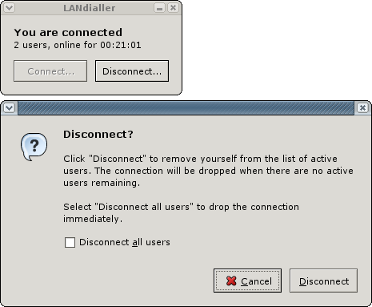
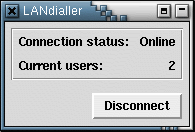
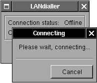
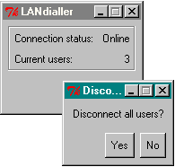

The new version of LANdialler uses the GTK2 GUI toolkit, which works well under Windows, Linux and MacOS X. Though it's not released yet, this is the sort of thing you can expect from version 0.3.
|  |
The old version LANdialler is known to run on Windows and Linux. On Windows it uses the Tk GUI library, which makes it look pretty much like a normal Windows program. On Linux it can use either the Tk or GTK+ GUI libraries, which means there is a lot more flexibility in terms of look and feel.
The following pictures should give you an idea of how LANdialler works, and what it looks like on different systems. The functionality remains the same across all platforms.
|  | Linux, the Tk toolkit and the Sawfish window manager |
|  | Linux, the GTK+ toolkit (Step theme) and the WindowMaker window manager |
|  | Windows, with Tk |